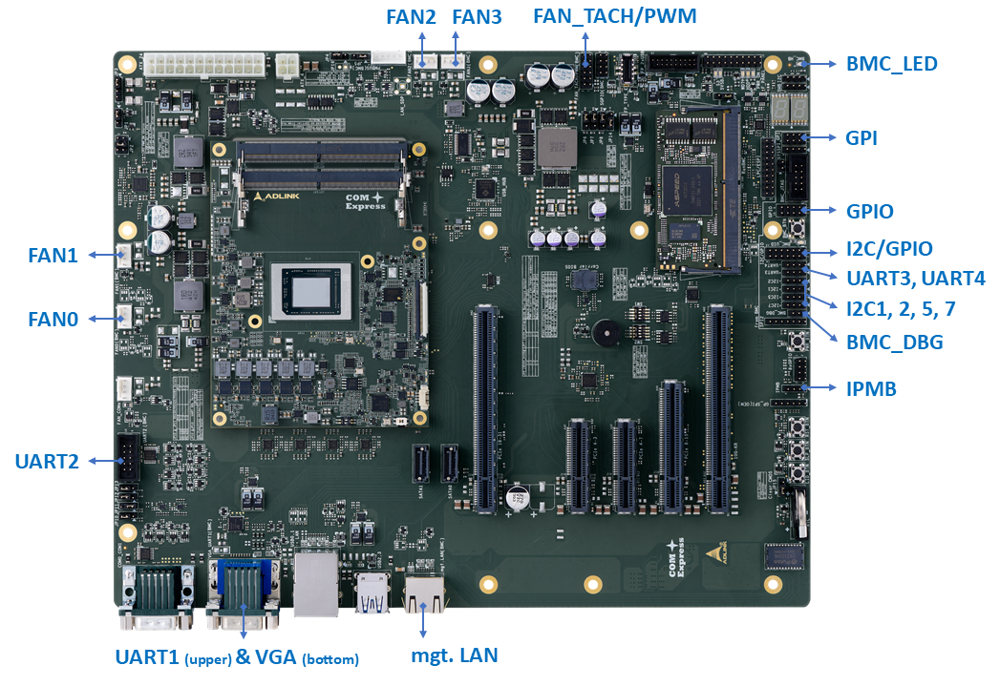
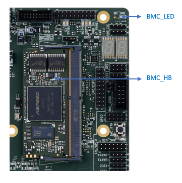
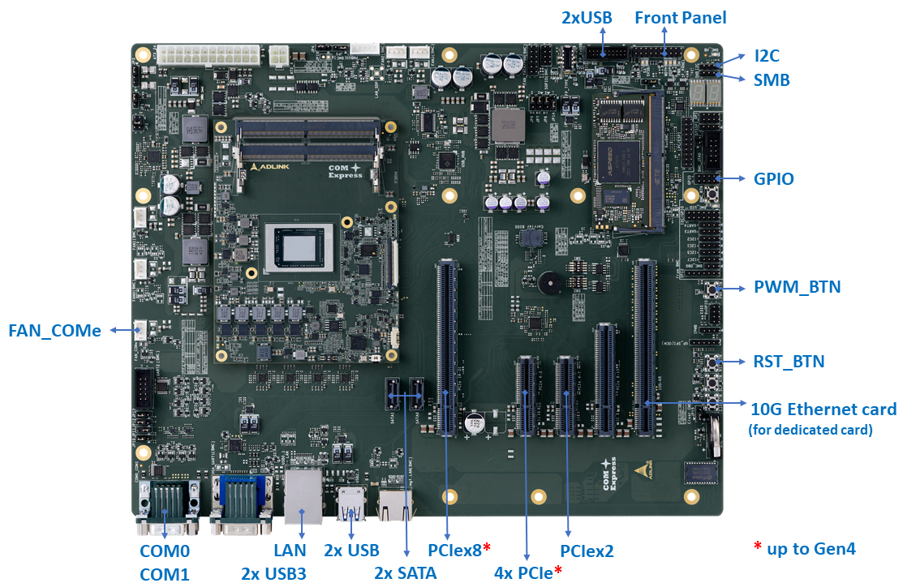

Interfaces Two main controllers on the Dev Kit, CPU and BMC. Interfaces such as USB, PCIe, SATA are offered by CPU, interfaces such as GPIO, I2C, UART are offered by BMC and/or CPU. Information below will indicates the main user interfaces come from BMC and CPU separately Interfaces - BMC  Some of interfaces will be accessed either through IPMItool (command line) or WebUI, get detail from BMC Introduction & IPMI Software Support mgt. LAN Remote management usage, up to 1000Mbit/s speed IPMB IPMB for expansion purpose, at 2.54 mm pitch pin header IPMB from MMC and IPMB from BMC route to this pin header BMC_DBG BMC debug port (also called as UART5, CONSOLE) Pin Signal Pin Signal 1 TXD 2 RXD 3 GND COM Ports UART1: BMC UART port_1 at DB9 connector. an adapter will be required for UART1 port Pin Signal Pin Signal 1 GND 2 DTR 3 TXD 4 RXD 5 DCD 6 RI# 7 CTS 8 RTS 9 DSR UART2: BMC UART port_2 at 2.54 mm pitch pin header Note : UART2 can function as Serial Over LAN (SOL) or general purpose usage, depends on jumper setting (JP12, JP13), check Carrier Introduction for detail. SOL as default Pin Signal Pin Signal 1 NC 2 NC 3 SER2_RX 4 SER2_RTS 5 SER2_TX 6 SER2_CTS 7 NC 8 NC 9 GND 10 NC I2C I2C1, I2C2, I2C5, I2C7 are for user usage via IPMI OEM command. located at separated 2.54 mm pitch pin headers Pin Signal 1 + 3.3V 2 I2C_DAT 3 I2C_CK 4 GND General Purpose Input/Output Several GPIO for user usage are located on GPI, GPIO, I2C/GPIO, UART3, UART4 pin headers (2.54 mm pitch) IPMI OEM commands are created for the setting of input or output direction, for the setting of high level or low level The pin name described on Signal column are leveraged from RunBMC module specification rev 1.4.1. many of the pins are described as multi-function, but will be given a default setting. for example, GPI0_ADC8 can be used as GPI or ADC function, depends on the firmware default setting. Get detail from BMC Introduction & IPMI Software Support Each GPIO will be given a GPIO number and it is not aligned with the signal name on the table below. for example, GPI0_ADC8 signal is mapping to GPIO number 160. A mapping table will be offered on BMC Introduction & Software Specs GPIOs at GPI pin header Pin Signal Pin Signal 1 GPI0_ADC8 2 GPI1_ADC9 3 GPI2_ADC10 4 GPI3_ADC11 5 GPI4_ADC12 6 GPI5_ADC13 7 GPI6_ADC14 8 GPI7_ADC15 Note : pin 1-8 are set as GPIO usage and can be accessed through OEM command GPIOs at GPIO pin header Pin Signal Pin Signal 1 GPIO57 2 GPIO63 3 GPIO73 4 GPIO77 5 GPIO44 6 GPIO99 7 GPIO106 8 GPIO107 9 GPIO108 * 10 GPIO98 * Note : GPIO108/GPIO98 are default porting as I2C/SMB Alert function. both of them are not configurabled even through OEM command GPIOs at I2C/GPIO pin header Pin Signal Pin Signal 1 I2C10SCL_GPIO110 2 I2C10SDA_GPIO111 3 I2C11SCL_GPIO117 4 I2C11SDA_GPIO118 5 I2C12SCL_GPIO100 6 I2C12SDA_GPIO101 7 I2C13SCL_GPIO26 8 I2C13SDA_GPIO28 9 GPIO91_I2C14SCL 10 GPIO93_I2C14SDA 11 GPIO113_I2C15SCL 12 GPIO115_I2C15SDA 13 GPIO95_I2C16SCL 14 GPIO97_I2C16SDA Note : pin 1-8 are configured as I2C function and can be accessed through OEM command. pin 9-14 are set as GPIO usage and also can be accessed through OEM command GPIOs at UART3 pin header Pin Signal Pin Signal 1 NC 2 GPIO103_UART3TX 3 GPIO102_UART3RX 4 GND Note : pin 2-3 are set as GPIO usage and also can be accessed through OEM command GPIOs at UART4 pin header Pin Signal Pin Signal 1 NC 2 GPIO105_UART4TX 3 GPIO104_UART4RX 4 GND Note : pin 2-3 are set as GPIO usage and also can be accessed through OEM command FAN 4 FAN at 4-pin FAN connector (FAN0, FAN1, FAN2, FAN3) for system level usage Pin Signal 1 GND 2 Fan Power 12V 3 Fan Speed Sense (TACH) 4 Fan Speed Control (PWM) Others PWM and TACH pins are located at FAN_TACH/PWM pin header (2.54 mm pitch) for further expansion Pin Signal Pin Signal 1 PWM6_GPIO13 2 TACH6_GPIO58 3 PWM7_GPIO18 4 TACH7_GPIO60 5 TACH12_GPIO68 6 TACH8_GPIO62 7 TACH13_GPIO70 8 TACH9_GPIO64 9 TACH14_GPIO72 10 TACH10_GPIO65 11 TACH15_GPIO74 12 TACH11_GPIO66 Note : pin 1, 3 are set as PWM usage. pin 2, 4 and 5-12 are set as TACH. all can be accessed through OEM command BMC_LED BMC_HB indicates the hardware initiation of the BMC chip (Blinking means ready) BMC_LED indicates the firmware initiation of the BMC chip (Always on means ready) BMC_HB will be actived followed by BMC_LED during power up procedure  Interfaces - CPU  PCIe Lane One PCIex8 lanes at a x16 slot, up to Gen4 One PCIex4 lanes at a x4 slot, up to Gen4 (configured as x1, x2, x4 usage at BIOS set-up menu) One PCIex2 lanes at a x4 slot. These lanes can be connected to BMC chip for VGA output Note : the PCIex2 lanes can be connected to BMC chip for VGA output and KVM feature support or can be connected to PCIe slot as general usage. It can be adjusted through jumper setting (JP5). check Carrier Introduction for detail. VGA/KVM as default USB & LAN One Ethernet and Up to two USB at Rear I/O 3-in-1 combo connector Ethernet is up to 2.5GbE speed USB is up to 5Gbit/s speed Up to two USB at Rear I/O 2-in-1 combo connector and Two USB on pin header (FP_2xUSB) These USB are from USB Hub, the source to USB hub is 5Gbit/s speed COM Ports COM0: Module UART port_0 at DB9 connector COM1: Module UART port_1 at DB9 connector Note : Module UART port_1 can function as Serial Over LAN (SOL) by connection with BMC or general purpose usage, depends on jumper setting (JP10, JP11, JP12, JP13), check Carrier Introduction for detail. SOL as default Pin Signal Pin Signal 1 NC 6 NC 2 SER_RX 7 NC 3 SER_TX 8 NC 4 NC 9 NC 5 GND FAN 1 FAN at 4-pin FAN connector (FAN_COMe) for CPU usage Pin Signal 1 GND 2 Fan Power 12V 3 Fan Speed Sense (TACH) 4 Fan Speed Control (PWM) I2C & SMB I2C at pin header (2.54 mm pitch) Pin Signal 1 + 3.3V 2 I2C_DAT 3 I2C_CK 4 GND SMB at pin header (2.54 mm pitch) Pin Signal 1 + 3.3V 2 SMB_DAT 3 SMB_CK 4 GND General Purpose Input/Output 8 GPIO at pin header (2.54 mm pitch) Pin Signal Pin Signal 1 GPI0 2 GPO0 3 GPI1 4 GPO1 5 GPI3 6 GPO2 7 GPI3 8 GPO3 Front Panel Pin Signal Pin Signal 1 HDD_LED_P 2 PWR_LED_P (5V) 3 HDD_LED_N 4 PWR_LED_N 5 GND 6 PWR_BTN_P 7 RST_BTN_P 8 PWR_BTN_N 9 NC 10 NC 11 PWR_LED_P (5V) 12 + 5VSB 13 PWR_LED_N 14 GND 15 NC 16 NC 17 GND 18 NC 19 NC 20 NC 10G Ethernet Card An optional feature depends on the configuration you ordered (with or without 10GbE adapter card) Multiple 10G-KR signals and its sideband signals are routed at a x16 slot Dedicated 10GbE adapter card converts the 10G-KR and sideband signals to 10G SFP+ or 10GBASE-T. get detail at 10GbE Card Introduction